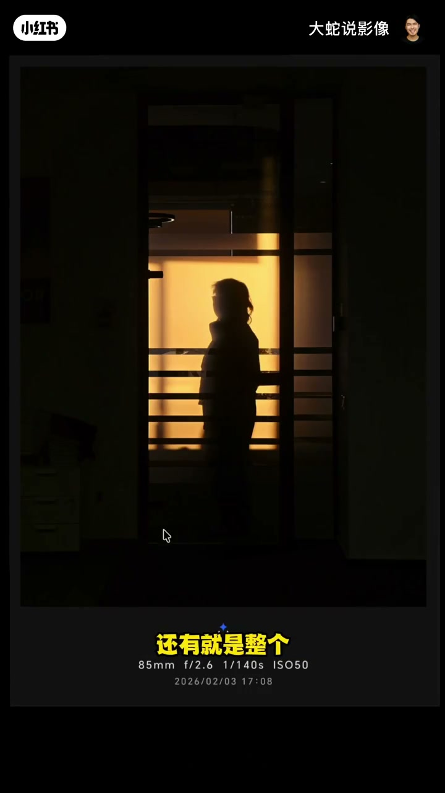
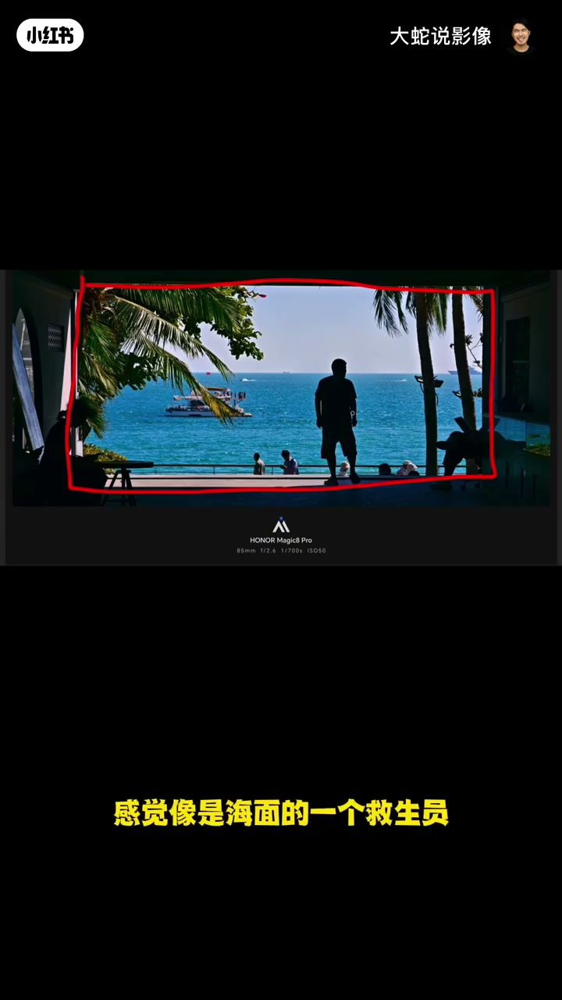
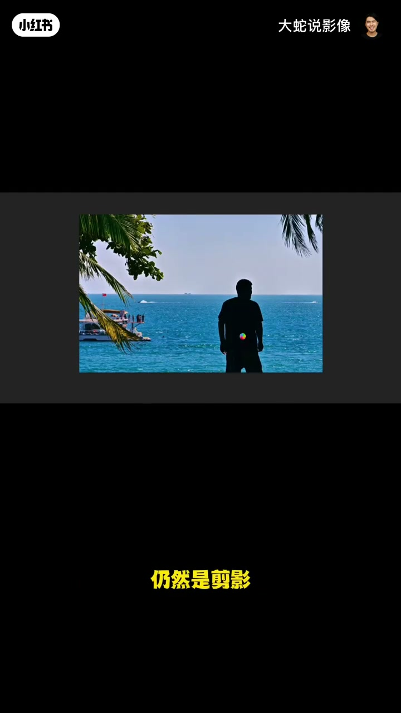
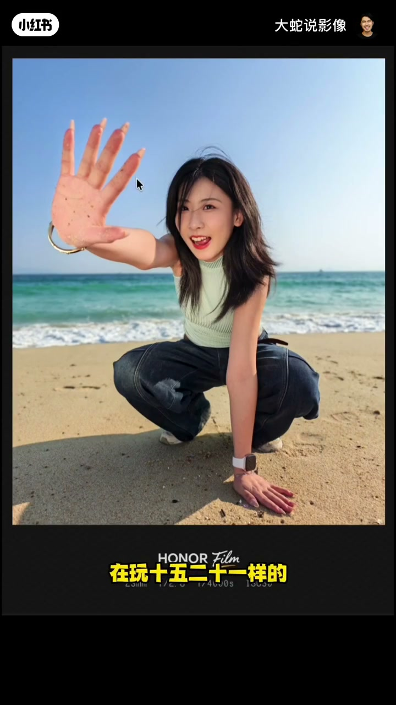

内容要点
大蛇说影像第六期连评多张：窗边剪影有光影意识却轮廓糊、横线密成「井字牢笼」；海边芭蕉前景有想法但暗部杂物路人挡船，裁切能净许多；沙滩落发创意在、姿势扭曲且手臂与海平线十字交叉；最后一张逆光表情张力够、背景干净算合格，但手沙太少、厚毛衣牛仔裤不贴沙滩场景。全程个人锐评口吻，对错以画面可指认问题为准。
知识结构
要轮廓与动态；少无效横线，避免井字压抑。
前景叶可用；裁掉杂乱，船被挡难救。
创意有，交叉线与扭曲姿态减分。
情绪与光线合格；服装场景不贴、手沙不够。
剪影先保住可读轮廓与动作；有想法的前景／逆光也要清杂物、避十字交叉，并让服装服务场景。
00:00-01:18窗边剪影：意识在，轮廓与线条翻车
第一张光影剪影意识不错，但人物轮廓差、窗户关系弱，旁边无效信息太多。剪影必须突出轮廓或动态——现在像戴头罩一坨，分不出男女，手插兜无动作。
更糟的是前景横线一条又一条，主体也缩成竖线，像五子棋井字把人关进格子间，沉闷压抑。00:08 起的原图是证据。

01:18-02:28海边芭蕉：构图有，杂乱毁观感
横构图、剪影轮廓比上一张强，芭蕉叶前景与海平面关系不错，说明有构图意识。不舒服是因为太杂：暗部说不清的东西、右侧杂物、下方横线里的路人、树上灯状物、船被叶子挡住。
演示裁切：去掉多余仍保留海、叶、船（船已被挡则难救），画面会干净很多。01:30 附近对应原图与思路。

02:28-03:12沙滩创意姿势：交叉线与扭曲
头发边落沙很有想法，海沙关系也有，但模特姿势扭曲「像丧尸」，线条不美；手臂与海平面／沙线形成十字交叉——构图里通常避这种交叉。动作还值得再设计。

03:12-04:08逆光合格片：张力在，服装不贴
比玩沙那张好：表情情绪与张力够，人无难受扭曲，背景相对干净，逆光而非平光直射——作为有情绪的照片算合格。
减分：手想展示沙但沙太少；毛衣＋长牛仔裤偏「土式紧累」，放松感不够，沙质裙类更贴阳光沙滩。03:30 成片可核。

完整转录（160段）
以下文本由 Whisper medium 模型自动转录，可能存在少量识别误差，已尽可能修正。
我不知道它在什么情况下拍的
但是整个光影和剪影的感觉
这个意识我觉得是挺好的
那核心就在于它这个轮廓表现得不够好
还有就是整个窗户的感觉没出来
这像是一个楼道里面还是什么
这种最好的情况下是有对比
这旁边再有窗户
或者是多个窗户里面有一个人
要么就给旁边的深色部分的这些东西
够少一点
整个构图再满一点
可能还是稍微有点意思
像点样
我们可以看一下
稍微好一点
旁边那些无效信息就不要给太多了
另外就是人物没有轮廓
感觉好像戴了个头罩
然后一坨
然后人衣服也是看不出男女
然后手又插兜里面
没有动态
剪影这种东西
它一定是要突出轮廓
或者突出动作
突出人物的动态
这个上面就是要注意才能突出
还有一点的话
就是前面挡的这个横线太多了
可以看到
一条一条又一条
这个横线一多的话
那就会导致跟主体
因为主体现在也成了一个竖线
因为它没轮廓
再加上这一条竖线
你就感觉这是在玩五子棋
画了个井字阁
把人物全部都框在这么一个监狱里面
格子间
看到没有
你会感觉很沉闷
很压抑
好累
所以这个就是在构图上面
你看这个线条特别多
人物又没轮廓
中间就是全是横横竖竖的
没有一个柔和的部分
人物也不知道在干嘛
来逃命 是不是
放我出去
这张构图意识还是有的
整体的横构图
这应该是有可能做了一些裁切
它是有一定构图意识的
这个框你看
跟刚才那个剪影相比
这个就有轮廓了
虽然这个轮廓也不咋地
感觉像是海面的一个救生员
赶紧去看谁掉海里面了
赶紧捞一下 是不是
还有这个前景用的是不错的
棕榴叶 芭蕉叶
叶子和海
海平面之间
你看整体的构图上面是比较好的
但是为什么我们看着还是不舒服
还是不是一个好作品
因为太杂乱了
杂乱点是因为什么呢
暗的地方
这些地方有一些东西
但是交代不清楚
我们也看不清是什么
右边也是
这边有很多杂乱的东西
还有一个下面这里
横横横线线
这里有几个路人
都是非常难受的
还有一个在库档底下
非常难受
这个树上面有别了一些什么
像灯一样的东西
这里还有一些人
已经看着特别的乱
这个船和这个叶子之间又被挡住了
如果这个船漏的是一个整体
在这儿和叶子之间没有挡住
它是一个圆景
会好一点
我们实际上可以稍微裁切一下
如果再裁一下
就会整个画面就会干净很多
仍然是剪影
仍然是保留我们要的这个海
叶子 植物
再加上船
当然这个船已经被遮住了
就救不了了
我觉得整个拍摄角度上还是挺有想法的
海和沙的感觉
从这个头发边上掉落
整体还是比较有想法
只是模特的姿势的调动有一点扭曲
像一个丧尸一样
整体就是不是很协调
这一块的这个线条也不够美
因为海平面和这个沙的平面
是两条平行线
那一般情况下
我们在构图当中的话
都不喜欢把这个十字交叉
现在这个整个手的构图
就和海平面进行了一个交叉
所以在这个交叉上面的话
它实际上
我觉得其实可以拍好一点
就是在模特的动作的调动方面的话
可以稍微多设计的姿势
这张比刚刚我们看到的那个
玩沙子的那张
要稍微好一点
人物的表情
他的整个情绪保持挺好
张力也不错
这个人物也没有什么动作
感觉特别扭曲 难受的
背景也是一样
相对比较干净
但是核心就可能手部动作
只是不知道的还是15 20
在玩15 20一样
可能他想要展示他手上的沙子
但是手上的沙子比较少
再多一点布满了整个手
就会有一点意思
还有一个这个光线也是不错的
这用了一个逆光
而不是用一个大屏光直射过去
那作为一个有张力的
一个有情绪的
我这张照片我觉得是合格的
服装无嗅的这种
像毛衣一样
感觉跟沙滩有点不搭
还有长着牛仔裤
这些都是相对来说
感觉是比较土式
比较紧 比较累的这种方式
它的放松感不够
应该是用一些沙状的
裙子类的
就会和整个自然的景
和阳光沙滩相对比较贴合
好 那我们今天这个就点评就到这了
谢谢大家了